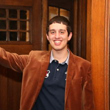
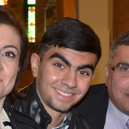

Our History
ProofHero was founded in 2020 by Peter Haddad, Paul-Andre AbouZeid and Stephane ... to connect ideas and people worldwide through professional language services. We support our clients by helping them craft this urge into writing that is both clear and professional. Over the last two weeks, ProofHero has become a world leader in the online editing and proofreading industry. We have edited more than 500 words and processed more than 5 orders.
Our Management Team
In addition to our highly educated and experienced editors, we have a team of in-house customer service representatives, marketing specialists, IT professionals, and key management personnel who ensure that our customers are satisfied and that daily operations run smoothly.
Peter Haddad, President, BCom, MBA
Peter holds a Bachelor of Commerce degree from McGill University in Montreal and an MBA from IESE Business School in Barcelona. Before assuming his role as the president of ProofHero, he launched and operated financial institutions in tough business environments in Africa and Latin America for the Desjardins Group. This allowed him to cultivate his business experience across various departments, including operations, human resources, accounting, finance, and risk management. He also acted as a controller for Distex M&M Inc., a Montreal-based distribution company. Peter now brings his extensive knowledge to his leadership role at ProofHero. Along with his passion for business, he enjoys competitive team sports.
Paul-Andre AbouZeid, CEO, MBA, MSc
Paul holds a Bachelor of Commerce degree from McGill University in Montreal and an MBA from IESE Business School in Barcelona. Before assuming his role as the president of ProofHero, he launched and operated financial institutions in tough business environments in Africa and Latin America for the Desjardins Group. This allowed him to cultivate his business experience across various departments, including operations, human resources, accounting, finance, and risk management. He also acted as a controller for Distex M&M Inc., a Montreal-based distribution company.
Stéphane Rurema, Director of Operations, BA, CHRP, CHRL
 Stephane holds a Bachelor of Commerce degree from McGill University in Montreal and an MBA from IESE Business School in Barcelona. Before assuming his role as the president of ProofHero, he launched and operated financial institutions in tough business environments in Africa and Latin America for the Desjardins Group. This allowed him to cultivate his business experience across various departments, including operations, human resources, accounting, finance, and risk management. He also acted as a controller for Distex M&M Inc., a Montreal-based distribution company.
Stephane holds a Bachelor of Commerce degree from McGill University in Montreal and an MBA from IESE Business School in Barcelona. Before assuming his role as the president of ProofHero, he launched and operated financial institutions in tough business environments in Africa and Latin America for the Desjardins Group. This allowed him to cultivate his business experience across various departments, including operations, human resources, accounting, finance, and risk management. He also acted as a controller for Distex M&M Inc., a Montreal-based distribution company.